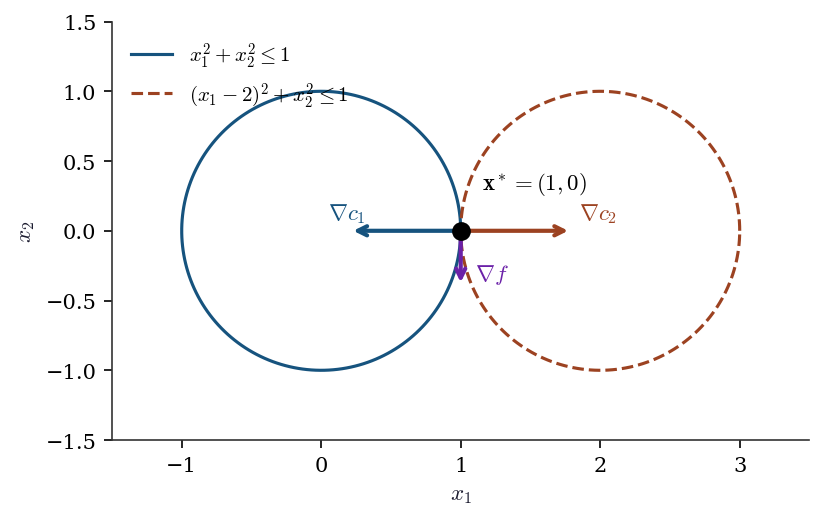
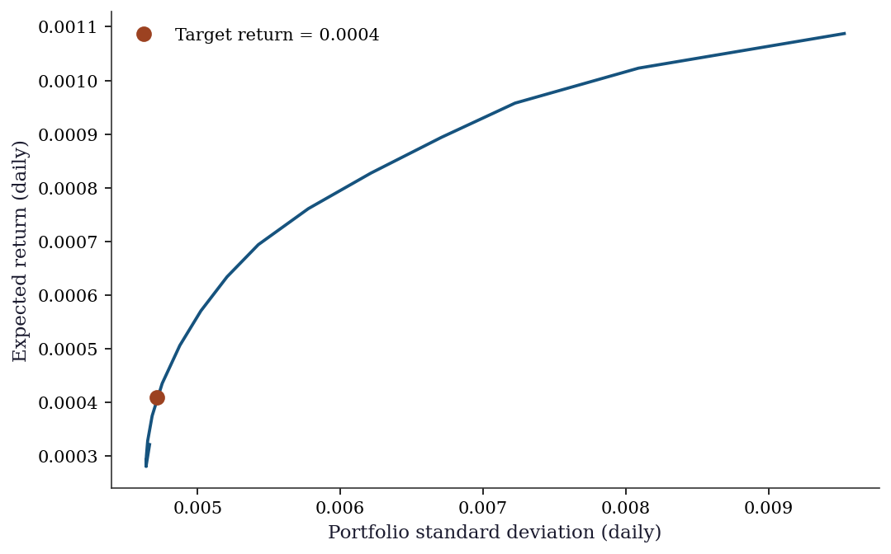

import numpy as np
import matplotlib.pyplot as plt
from scipy.optimize import (
minimize, rosen, rosen_der, rosen_hess,
LinearConstraint, NonlinearConstraint,
)
plt.style.use('assets/book.mplstyle')3 Constrained and Equality-Constrained Optimization
3.1 Notation for this chapter
| Symbol | Meaning |
|---|---|
| \(c_i(\mathbf{x})\) | \(i\)-th constraint function |
| \(\mathcal{E}\) | Index set of equality constraints |
| \(\mathcal{I}\) | Index set of inequality constraints |
| \(\mathcal{A}(\mathbf{x})\) | Active set: \(\{i \in \mathcal{I} : c_i(\mathbf{x}) = 0\}\) |
| \(\boldsymbol{\lambda}\) | Lagrange multiplier vector (equality constraints) |
| \(\boldsymbol{\mu}\) | KKT multiplier vector (inequality constraints) |
| \(\mathcal{L}(\mathbf{x}, \boldsymbol{\lambda}, \boldsymbol{\mu})\) | Lagrangian |
| \(\nabla_{\mathbf{x}} \mathcal{L}\) | Gradient of Lagrangian w.r.t. \(\mathbf{x}\) |
| \(\nabla^2_{\mathbf{x}\mathbf{x}} \mathcal{L}\) | Hessian of Lagrangian w.r.t. \(\mathbf{x}\) |
| \(\mu\) (scalar, non-bold) | Barrier parameter (interior-point, §2.6) |
| \(\mathbf{J}(\mathbf{x})\) | Jacobian of active constraints |
4 Motivation
Chapter 2 solved \(\min f(\mathbf{x})\) over all of \(\mathbb{R}^p\). That suffices when parameters are truly unconstrained—but in statistical applications, they rarely are. Variance components must be nonnegative. Probability vectors must sum to 1 and have nonnegative entries. Correlation matrices must be positive semidefinite. Portfolio weights are bounded. Dose-response parameters are monotone.
When you add constraints or bounds to scipy.optimize.minimize, you switch from the methods of Chapter 2 (BFGS, trust-region) to the methods of this chapter: SLSQP (a Fortran implementation of Sequential Quadratic Programming) and trust-constr (a Python implementation of a barrier interior-point method). Both are sophisticated algorithms, and both can fail silently when the constraint geometry is pathological.
This chapter develops the theory that explains when constrained optimization works, when it fails, and why. The central object is the Karush–Kuhn–Tucker (KKT) system—a set of necessary conditions for optimality that generalizes “gradient equals zero” to the constrained setting. The central subtlety is the constraint qualification: a regularity condition on the constraint geometry without which the KKT conditions are not even necessary. Three constraint qualifications are developed in detail, each with a counterexample showing what goes wrong when it fails.
The two algorithms—SQP and interior point—are then developed as two different strategies for solving the KKT system. SQP applies Newton’s method directly. Interior point relaxes the complementarity condition via a logarithmic barrier and approaches the solution from the interior of the feasible set.
5 Mathematical Foundation
5.1 The constrained optimization problem
We consider
\[ \min_{\mathbf{x} \in \mathbb{R}^p} f(\mathbf{x}) \quad \text{subject to} \quad \begin{cases} c_i(\mathbf{x}) = 0, & i \in \mathcal{E}, \\ c_j(\mathbf{x}) \geq 0, & j \in \mathcal{I}, \end{cases} \tag{5.1}\]
where \(f, c_i, c_j: \mathbb{R}^p \to \mathbb{R}\) are all twice continuously differentiable. The feasible set is \(\Omega = \{\mathbf{x} : c_i(\mathbf{x}) = 0 \; \forall i \in \mathcal{E}, \; c_j(\mathbf{x}) \geq 0 \; \forall j \in \mathcal{I}\}\).
The active set at a feasible point \(\mathbf{x}\) is \(\mathcal{A}(\mathbf{x}) = \mathcal{E} \cup \{j \in \mathcal{I} : c_j(\mathbf{x}) = 0\}\)—the set of constraints that are tight at \(\mathbf{x}\).
The Lagrangian is
\[ \mathcal{L}(\mathbf{x}, \boldsymbol{\lambda}, \boldsymbol{\mu}) = f(\mathbf{x}) - \sum_{i \in \mathcal{E}} \lambda_i c_i(\mathbf{x}) - \sum_{j \in \mathcal{I}} \mu_j c_j(\mathbf{x}). \tag{5.2}\]
5.2 Constraint qualifications
The KKT conditions are necessary for optimality only under a constraint qualification—a regularity condition that prevents the constraint geometry from being degenerate at the solution. Without a CQ, KKT can fail to hold at a local minimizer.
We develop three CQs in decreasing strength: LICQ (strongest), MFCQ, and CRCQ (weakest of the three). Each is illustrated with a counterexample showing what breaks when it fails.
Definition 3.1 (LICQ — Linear Independence Constraint Qualification)
LICQ holds at a feasible point \(\mathbf{x}^*\) if the gradients of the active constraints \(\{\nabla c_i(\mathbf{x}^*) : i \in \mathcal{A}(\mathbf{x}^*)\}\) are linearly independent.
LICQ is the strongest standard CQ. It guarantees that the KKT multipliers are unique. It fails when two active constraints have parallel (or anti-parallel) gradients at the solution.
Counterexample 3.1 (LICQ failure, MFCQ holds)
Minimize \(f(x_1, x_2) = -(x_1 + x_2)\) subject to \(c_1(\mathbf{x}) = 1 - x_1 - x_2 \geq 0\) and \(c_2(\mathbf{x}) = 2 - 2x_1 - 2x_2 \geq 0\).
The second constraint is a scaled copy of the first; both define the same half-plane. At \(\mathbf{x}^* = (0.5, 0.5)\), both are active. The active constraint gradients are \(\nabla c_1 = (-1, -1)\) and \(\nabla c_2 = (-2, -2)\)—linearly dependent. LICQ fails.
The KKT multipliers are not unique: any \((\mu_1, \mu_2)\) with \(\mu_1 + 2\mu_2 = 1\) and \(\mu_1, \mu_2 \geq 0\) satisfies KKT.
Despite LICQ failing, the problem is well-behaved: the feasible region has a nonempty interior, and the solution is a genuine constrained minimizer. MFCQ holds (see below), and KKT conditions are necessary—just with non-unique multipliers.
Definition 3.2 (MFCQ — Mangasarian–Fromovitz CQ)
MFCQ holds at a feasible point \(\mathbf{x}^*\) if:
- The equality constraint gradients \(\{\nabla c_i(\mathbf{x}^*) : i \in \mathcal{E}\}\) are linearly independent, and
- There exists a direction \(\mathbf{d}\) such that \(\nabla c_j(\mathbf{x}^*)^\top \mathbf{d} > 0\) for all \(j \in \mathcal{A}(\mathbf{x}^*) \cap \mathcal{I}\) (active inequality constraints), and \(\nabla c_i(\mathbf{x}^*)^\top \mathbf{d} = 0\) for all \(i \in \mathcal{E}\) (equality constraints).
MFCQ is strictly weaker than LICQ: it allows linearly dependent inequality constraint gradients, provided there exists a direction that simultaneously enters the interior of all active inequality constraints. In Counterexample 3.1, \(\mathbf{d} = (-1, 0)\) satisfies \(\nabla c_1^\top \mathbf{d} = -1 < 0\) (pointing into the constraint \(c_1 \leq 1\), which means \(\nabla(-c_1)^\top \mathbf{d} = 1 > 0\) for the \(\geq 0\) form). So MFCQ holds.
Counterexample 3.2 (MFCQ failure — tangent circles)
Minimize \(f(x_1, x_2) = -x_2\) subject to \(c_1(\mathbf{x}) = 1 - x_1^2 - x_2^2 \geq 0\) (inside the unit circle) and \(c_2(\mathbf{x}) = 1 - (x_1 - 2)^2 - x_2^2 \geq 0\) (inside the circle centered at \((2, 0)\)).
The feasible set is the single point \((1, 0)\) where the two circles are tangent. At this point: \[ \nabla c_1 = (-2, 0), \qquad \nabla c_2 = (2, 0). \] These are anti-parallel. For MFCQ, we need \(\mathbf{d}\) with \(\nabla c_1^\top \mathbf{d} > 0\) and \(\nabla c_2^\top \mathbf{d} > 0\), i.e., \(-2d_1 > 0\) and \(2d_1 > 0\)—impossible. MFCQ fails.
The KKT conditions are not necessary here. The point \((1, 0)\) is the only feasible point and hence trivially the global minimizer, but there exist no multipliers satisfying \(\nabla f = \mu_1 \nabla c_1 + \mu_2 \nabla c_2\) with \(\mu_1, \mu_2 \geq 0\), because \(\nabla f = (0, -1)\) is orthogonal to both \(\nabla c_1\) and \(\nabla c_2\), which span only the \(x_1\)-axis.
theta = np.linspace(0, 2 * np.pi, 200)
fig, ax = plt.subplots(figsize=(6, 5))
# Circles
ax.plot(np.cos(theta), np.sin(theta), color="C0", linewidth=1.5,
label=r"$x_1^2 + x_2^2 \leq 1$")
ax.plot(2 + np.cos(theta), np.sin(theta), color="C1", linewidth=1.5,
label=r"$(x_1-2)^2 + x_2^2 \leq 1$")
# Tangent point
ax.plot(1, 0, 'ko', markersize=8, zorder=5)
ax.annotate(r"$\mathbf{x}^* = (1, 0)$", (1, 0),
xytext=(1.15, 0.3), fontsize=11)
# Gradient arrows
scale = 0.4
ax.annotate("", xy=(1 - scale * 2, 0), xytext=(1, 0),
arrowprops=dict(arrowstyle="->", color="C0", lw=2))
ax.text(1 - scale * 2 - 0.15, 0.08, r"$\nabla c_1$",
color="C0", fontsize=11)
ax.annotate("", xy=(1 + scale * 2, 0), xytext=(1, 0),
arrowprops=dict(arrowstyle="->", color="C1", lw=2))
ax.text(1 + scale * 2 + 0.05, 0.08, r"$\nabla c_2$",
color="C1", fontsize=11)
ax.annotate("", xy=(1, -scale), xytext=(1, 0),
arrowprops=dict(arrowstyle="->", color="C3", lw=2))
ax.text(1.1, -scale + 0.05, r"$\nabla f$", color="C3", fontsize=11)
ax.set_xlim(-1.5, 3.5)
ax.set_ylim(-1.5, 1.5)
ax.set_aspect('equal')
ax.legend(loc='upper left')
ax.set_xlabel(r"$x_1$")
ax.set_ylabel(r"$x_2$")
plt.show()
Definition 3.3 (CRCQ — Constant Rank Constraint Qualification)
CRCQ holds at a feasible point \(\mathbf{x}^*\) if, for every subset \(S \subseteq \mathcal{A}(\mathbf{x}^*)\), the rank of \(\{\nabla c_i(\mathbf{x}) : i \in S\}\) is constant for all \(\mathbf{x}\) in a neighborhood of \(\mathbf{x}^*\).
CRCQ is weaker than LICQ (it allows rank-deficient constraint Jacobians) but requires that the rank not change near the solution. It fails when a constraint gradient vanishes at the solution but not nearby.
Counterexample 3.3 (CRCQ failure)
Consider the constraint \(c(x) = x^2 \geq 0\) at \(x^* = 0\).
\(\nabla c(0) = 0\), so the constraint gradient vanishes at \(x^*\). For \(x \neq 0\), \(\nabla c(x) = 2x \neq 0\), so the rank of \(\{\nabla c\}\) is 1 near \(x^*\) but 0 at \(x^*\). CRCQ fails.
The constraint \(x^2 \geq 0\) is vacuous (satisfied everywhere), but the optimizer does not know this. At \(x = 0\), the constraint is active with a zero gradient, creating a degenerate KKT system where the multiplier \(\mu\) can take any value.
5.3 First-order necessary conditions: KKT
Theorem 3.1 (KKT necessary conditions under LICQ)
Let \(\mathbf{x}^*\) be a local minimizer of Equation eq-constrained, and suppose LICQ holds at \(\mathbf{x}^*\). Then there exist unique multipliers \(\boldsymbol{\lambda}^* \in \mathbb{R}^{|\mathcal{E}|}\) and \(\boldsymbol{\mu}^* \in \mathbb{R}^{|\mathcal{I}|}\) such that:
- Stationarity. \(\nabla_\mathbf{x} \mathcal{L}(\mathbf{x}^*, \boldsymbol{\lambda}^*, \boldsymbol{\mu}^*) = \mathbf{0}\).
- Primal feasibility. \(c_i(\mathbf{x}^*) = 0\) for \(i \in \mathcal{E}\); \(c_j(\mathbf{x}^*) \geq 0\) for \(j \in \mathcal{I}\).
- Dual feasibility. \(\mu_j^* \geq 0\) for \(j \in \mathcal{I}\).
- Complementary slackness. \(\mu_j^* c_j(\mathbf{x}^*) = 0\) for \(j \in \mathcal{I}\).
Proof. Since \(\mathbf{x}^*\) is a local minimizer, every feasible direction of descent must be blocked by the constraints. Formally, if \(\mathbf{d}\) is a tangent vector to the feasible set at \(\mathbf{x}^*\) (i.e., \(\nabla c_i(\mathbf{x}^*)^\top \mathbf{d} = 0\) for \(i \in \mathcal{E}\) and \(\nabla c_j(\mathbf{x}^*)^\top \mathbf{d} \geq 0\) for \(j \in \mathcal{A}(\mathbf{x}^*) \cap \mathcal{I}\)), then \(\nabla f(\mathbf{x}^*)^\top \mathbf{d} \geq 0\).
Under LICQ, the linearized tangent cone (defined by the gradient conditions above) equals the true tangent cone. The key step: LICQ implies that the active constraints locally define a smooth manifold (by the implicit function theorem, since their Jacobian has full row rank). Any tangent vector to this manifold satisfies the linearized constraints, and conversely any direction satisfying the linearized constraints is tangent to a feasible curve (constructed via the IFT). This is Abadie’s CQ; LICQ is a sufficient condition. By Farkas’ lemma, the condition “\(\nabla f^\top \mathbf{d} \geq 0\) for all \(\mathbf{d}\) in the linearized tangent cone” is equivalent to: \(-\nabla f(\mathbf{x}^*)\) lies in the polar cone of the linearized tangent cone, which is the conic hull of the active constraint gradients. That is:
\[ \nabla f(\mathbf{x}^*) = \sum_{i \in \mathcal{E}} \lambda_i^* \nabla c_i(\mathbf{x}^*) + \sum_{j \in \mathcal{A}(\mathbf{x}^*) \cap \mathcal{I}} \mu_j^* \nabla c_j(\mathbf{x}^*), \tag{5.3}\]
with \(\mu_j^* \geq 0\). Setting \(\mu_j^* = 0\) for inactive constraints (\(j \notin \mathcal{A}(\mathbf{x}^*)\)) gives complementary slackness. Uniqueness of \((\boldsymbol{\lambda}^*, \boldsymbol{\mu}^*)\) follows from linear independence of the active constraint gradients (LICQ). \(\square\)
5.4 Second-order sufficient conditions
Theorem 3.2 (Second-order sufficient conditions)
Let \((\mathbf{x}^*, \boldsymbol{\lambda}^*, \boldsymbol{\mu}^*)\) satisfy the KKT conditions. Define the critical cone: \[ \mathcal{C}(\mathbf{x}^*) = \left\{\mathbf{d} : \nabla c_i(\mathbf{x}^*)^\top \mathbf{d} = 0, \; i \in \mathcal{E}; \quad \nabla c_j(\mathbf{x}^*)^\top \mathbf{d} = 0, \; j \in \mathcal{A}(\mathbf{x}^*) \text{ with } \mu_j^* > 0 \right\}. \] If \(\mathbf{d}^\top \nabla^2_{\mathbf{x}\mathbf{x}} \mathcal{L}(\mathbf{x}^*, \boldsymbol{\lambda}^*, \boldsymbol{\mu}^*) \mathbf{d} > 0\) for all nonzero \(\mathbf{d} \in \mathcal{C}(\mathbf{x}^*)\), then \(\mathbf{x}^*\) is a strict local minimizer.
Why it works. The critical cone captures the directions that keep the binding constraints tight to first order and are not ruled out by strictly complementary multipliers. On these directions, the curvature of the objective alone does not determine sufficiency—you need the curvature of the Lagrangian, because the constraint terms contribute second-order effects that the objective misses. If the Lagrangian Hessian is positive definite on the critical cone, any feasible perturbation incurs a net increase in the Lagrangian, which bounds the objective from below. See Nocedal and Wright (2006), Theorem 12.6 for the full proof.
5.5 SQP as Newton’s method on the KKT system
Theorem 3.3 (SQP subproblem = Newton step on KKT)
Consider the equality-constrained problem \(\min f(\mathbf{x})\) subject to \(\mathbf{c}(\mathbf{x}) = \mathbf{0}\). The SQP subproblem at \((\mathbf{x}_k, \boldsymbol{\lambda}_k)\):
\[ \min_{\mathbf{p}} \nabla f_k^\top \mathbf{p} + \tfrac{1}{2}\mathbf{p}^\top \nabla^2_{\mathbf{x}\mathbf{x}}\mathcal{L}_k\, \mathbf{p} \quad \text{s.t.} \quad \mathbf{c}_k + \mathbf{J}_k \mathbf{p} = \mathbf{0} \tag{5.4}\]
(where \(\mathbf{J}_k\) is the constraint Jacobian) is equivalent to one Newton step on the KKT system
\[ F(\mathbf{x}, \boldsymbol{\lambda}) = \begin{pmatrix} \nabla f(\mathbf{x}) - \mathbf{J}(\mathbf{x})^\top \boldsymbol{\lambda} \\ \mathbf{c}(\mathbf{x}) \end{pmatrix} = \mathbf{0}. \tag{5.5}\]
Proof. Newton’s method on Equation eq-kkt-system computes \((\mathbf{p}, \boldsymbol{\lambda}_{k+1})\) by solving
\[ \begin{pmatrix} \nabla^2_{\mathbf{x}\mathbf{x}}\mathcal{L}_k & -\mathbf{J}_k^\top \\ \mathbf{J}_k & \mathbf{0} \end{pmatrix} \begin{pmatrix} \mathbf{p} \\ \boldsymbol{\lambda}_{k+1} - \boldsymbol{\lambda}_k \end{pmatrix} = -\begin{pmatrix} \nabla f_k - \mathbf{J}_k^\top \boldsymbol{\lambda}_k \\ \mathbf{c}_k \end{pmatrix}. \tag{5.6}\]
The first block row gives: \(\nabla^2_{\mathbf{x}\mathbf{x}}\mathcal{L}_k\, \mathbf{p} - \mathbf{J}_k^\top \boldsymbol{\lambda}_{k+1} = -\nabla f_k\), i.e., \(\nabla^2_{\mathbf{x}\mathbf{x}}\mathcal{L}_k\, \mathbf{p} + \nabla f_k = \mathbf{J}_k^\top \boldsymbol{\lambda}_{k+1}\).
The second block row gives: \(\mathbf{J}_k \mathbf{p} = -\mathbf{c}_k\), i.e., \(\mathbf{c}_k + \mathbf{J}_k \mathbf{p} = \mathbf{0}\).
Now consider the KKT conditions of the SQP subproblem Equation eq-sqp-sub. The Lagrangian of the QP is \(\ell(\mathbf{p}, \boldsymbol{\nu}) = \nabla f_k^\top \mathbf{p} + \tfrac{1}{2}\mathbf{p}^\top \nabla^2_{\mathbf{x}\mathbf{x}}\mathcal{L}_k\, \mathbf{p} - \boldsymbol{\nu}^\top(\mathbf{c}_k + \mathbf{J}_k \mathbf{p})\). Stationarity gives: \(\nabla f_k + \nabla^2_{\mathbf{x}\mathbf{x}}\mathcal{L}_k\, \mathbf{p} = \mathbf{J}_k^\top \boldsymbol{\nu}\).
Identifying \(\boldsymbol{\nu} = \boldsymbol{\lambda}_{k+1}\), the QP’s KKT conditions are identical to the Newton system Equation eq-newton-kkt. Therefore the SQP step \((\mathbf{p}, \boldsymbol{\lambda}_{k+1})\) is exactly the Newton step on the KKT system. \(\square\)
This is the conceptual foundation of SQP: it inherits Newton’s local quadratic convergence when applied to the KKT system, provided the active set is correctly identified near the solution and the Hessian of the Lagrangian is positive definite on the constraint null space.
5.6 Interior-point / barrier methods
The logarithmic barrier approach replaces inequality constraints with a penalty in the objective:
\[ \min_{\mathbf{x}} f(\mathbf{x}) - \mu \sum_{j \in \mathcal{I}} \ln c_j(\mathbf{x}) \quad \text{s.t.} \quad c_i(\mathbf{x}) = 0, \; i \in \mathcal{E}, \tag{5.7}\]
where \(\mu > 0\) is the barrier parameter. The \(\ln c_j\) term forces the iterates to stay in the interior of the feasible set (\(c_j > 0\)), and blows up as any constraint approaches zero.
Theorem 3.4 (Barrier convergence)
Under LICQ, if \(f\) is convex, the inequality constraints \(c_j\) are concave (so that \(\{c_j \geq 0\}\) is convex), and the feasible set is bounded with nonempty interior, then for each \(\mu > 0\) the barrier problem Equation eq-barrier has a unique solution \(\mathbf{x}(\mu)\). As \(\mu \to 0^+\), \(\mathbf{x}(\mu) \to \mathbf{x}^*\), the solution of Equation eq-constrained. The path \(\{\mathbf{x}(\mu) : \mu > 0\}\) is called the central path.
Proof sketch. For each \(\mu > 0\), the barrier objective \(\phi_\mu(\mathbf{x}) = f(\mathbf{x}) - \mu \sum \ln c_j(\mathbf{x})\) is strictly convex on the interior of \(\Omega\): \(f\) is convex by hypothesis, and \(-\ln(c_j(\mathbf{x}))\) is convex when \(c_j\) is concave (the composition of a convex decreasing function with a concave function is convex), and strictly convex when \(c_j\) is strictly concave or the level sets of \(c_j\) have curvature. On a bounded set, a strictly convex function attains a unique minimum. The KKT conditions of Equation eq-barrier are:
\[ \nabla f(\mathbf{x}) - \mu \sum_{j} \frac{\nabla c_j(\mathbf{x})}{c_j(\mathbf{x})} - \sum_i \lambda_i \nabla c_i(\mathbf{x}) = \mathbf{0}. \]
Defining \(\mu_j = \mu / c_j(\mathbf{x})\), this becomes the KKT stationarity condition with the perturbed complementarity: \(\mu_j c_j = \mu\) instead of \(\mu_j c_j = 0\). As \(\mu \to 0\), the perturbed system converges to the exact KKT system, and the solutions converge (under the stated regularity). The rigorous proof uses the implicit function theorem on the perturbed KKT system; see Nocedal and Wright (2006), Chapter 19, or Boyd and Vandenberghe (2004), §11.2. \(\square\)
Scipy’s trust-constr implements a primal-dual interior-point method based on Byrd, Hribar, and Nocedal (1999). The barrier parameter starts at \(\mu = 0.1\) and is multiplied by 0.2 at each outer iteration. Each inner iteration solves the perturbed KKT system using the equality-constrained SQP method from Theorem 3.3, applied to the barrier objective with slack variables.
6 The Algorithm
7 Statistical Properties
Constrained optimization arises in statistics whenever the parameter space has boundaries or structure. Two settings deserve attention.
Boundary parameters. When the true parameter lies on the boundary of the constraint set—a variance component equal to zero, a correlation equal to \(\pm 1\)—the asymptotic distribution of the MLE changes. Under the null hypothesis \(H_0: \theta = \theta_0\) where \(\theta_0\) is on the boundary, the likelihood ratio statistic does not follow the usual \(\chi^2\) distribution. Instead, it follows a mixture:
\[ 2[\ell(\hat{\theta}) - \ell(\theta_0)] \xrightarrow{d} \frac{1}{2}\chi^2_0 + \frac{1}{2}\chi^2_1, \]
where \(\chi^2_0\) is a point mass at zero (Chernoff, 1954). This is the content of Chernoff’s theorem, developed in §10.5. The optimization theory here (KKT, active-set identification, complementary slackness) is the computational counterpart: the optimizer must correctly identify that the constraint is active and report the corresponding multiplier.
Profile likelihood. Maximizing \(\ell(\theta_1, \theta_2)\) over \(\theta_2\) for each fixed \(\theta_1 = \theta_1^0\) is a constrained optimization problem: \(\max_{\theta_2} \ell(\theta_1^0, \theta_2)\). The profile likelihood \(\ell_P(\theta_1) = \max_{\theta_2} \ell(\theta_1, \theta_2)\) traces out a curve whose shape reflects the curvature of the full likelihood along the \(\theta_1\) direction. The KKT multiplier of the constraint \(\theta_1 = \theta_1^0\) equals the score \(\partial \ell / \partial \theta_1\) evaluated at the profile MLE—connecting constrained optimization to the score test (§10.3).
8 SciPy Implementation
Scipy provides two constrained optimization methods: SLSQP (a Fortran wrapper for Kraft’s SQP algorithm) and trust-constr (a Python interior-point method based on Byrd, Hribar, and Nocedal). They differ in algorithm, constraint syntax, and when to use each.
8.1 Mapping table
| Book notation | scipy parameter | Notes |
|---|---|---|
| \(c_i(\mathbf{x}) = 0\) | {'type': 'eq', 'fun': c_i} (SLSQP) |
Dict-style |
| \(c_j(\mathbf{x}) \geq 0\) | {'type': 'ineq', 'fun': c_j} (SLSQP) |
Dict-style: fun(x) >= 0 |
| \(l \leq \mathbf{A}\mathbf{x} \leq u\) | LinearConstraint(A, l, u) |
trust-constr |
| \(l \leq c(\mathbf{x}) \leq u\) | NonlinearConstraint(c, l, u) |
trust-constr |
| \(\mu\) (barrier) | initial_barrier_parameter |
Default 0.1, decays by 0.2 |
| \(\boldsymbol{\lambda}^*\) | result.v[0] (SLSQP), result.v (trust-constr) |
KKT multipliers |
8.2 Constraint syntax comparison
x0 = np.array([0.5, 0.0])
# Minimize Rosenbrock subject to x1 + x2 <= 1.5
# SLSQP: dict-style (fun(x) >= 0)
res_slsqp = minimize(
fun=rosen,
x0=x0,
method='SLSQP',
jac=rosen_der,
constraints={'type': 'ineq',
'fun': lambda x: 1.5 - (x[0] + x[1])},
)
# trust-constr: LinearConstraint (lb <= Ax <= ub)
res_tc = minimize(
fun=rosen,
x0=x0,
method='trust-constr',
jac=rosen_der,
hess=rosen_hess,
constraints=LinearConstraint([[1, 1]], -np.inf, 1.5),
)
print(f"SLSQP: x = {res_slsqp.x.round(6)}, f = {res_slsqp.fun:.6f}")
print(f"trust-constr: x = {res_tc.x.round(6)}, f = {res_tc.fun:.6f}")SLSQP: x = [0.82313 0.67687], f = 0.031328
trust-constr: x = [0.823037 0.676721], f = 0.031361Note the sign convention: SLSQP requires fun(x) >= 0 (so the constraint \(x_1 + x_2 \leq 1.5\) becomes 1.5 - (x[0] + x[1]) >= 0), while LinearConstraint and NonlinearConstraint use a bound syntax lb <= c(x) <= ub, which is more natural.
8.3 Key defaults
SLSQP (Fortran, Kraft 1988):
- Full SQP with least-squares QP subproblem solver
- Default tolerance
ftol = 1e-6on objective change - Finite-difference Jacobians by default (
eps ≈ 1.49e-8) - Supports both equality and inequality constraints
- Best for small-to-medium problems with simple constraints
- Does not accept a Hessian — uses a quasi-Newton approximation internally
trust-constr (Python, Byrd–Hribar–Nocedal 1999):
- Interior-point method for problems with inequality constraints
- Equality-only SQP when no inequalities are present
- Barrier parameter: starts at 0.1, decays by factor 0.2 each outer iteration
- Accepts Hessian (
hess) or Hessian-vector product (hessp) - Better for large problems and when the Hessian is available
- Reports KKT multipliers in
result.v
9 From-Scratch Implementation
We implement equality-constrained SQP (Algorithm 3.1) for a simple problem: minimize \(\|\mathbf{x}\|^2\) subject to \(\mathbf{1}^\top \mathbf{x} = 1\). The SQP reduces to solving the Newton-KKT system Equation eq-newton-kkt at each iteration.
def sqp_equality(fun, grad, hess_lag, con, jac_con,
x0, lam0, tol=1e-8, maxiter=50):
"""SQP for equality-constrained problems.
Implements Algorithm 3.1: Newton's method on the KKT system.
Parameters
----------
fun : callable
Objective f(x) -> float.
grad : callable
Gradient of f.
hess_lag : callable
Hessian of Lagrangian hess_lag(x, lam) -> (p, p) array.
con : callable
Constraint function c(x) -> (m,) array. Constraints: c(x) = 0.
jac_con : callable
Jacobian of constraints jac_con(x) -> (m, p) array.
x0, lam0 : arrays
Starting point and initial multiplier estimate.
tol : float
KKT residual tolerance.
maxiter : int
Maximum iterations.
"""
x = np.asarray(x0, dtype=float).copy()
lam = np.asarray(lam0, dtype=float).copy()
p_dim, m_dim = len(x), len(lam)
for k in range(maxiter):
g = grad(x)
c = con(x)
J = jac_con(x)
H = hess_lag(x, lam)
# KKT residual
lag_grad = g - J.T @ lam
kkt_res = max(np.max(np.abs(lag_grad)), np.max(np.abs(c)))
if kkt_res < tol:
return {'x': x, 'lam': lam, 'nit': k,
'success': True, 'kkt_residual': kkt_res}
# Newton step on KKT system (Eq. 3.8)
KKT_mat = np.block([
[H, -J.T],
[J, np.zeros((m_dim, m_dim))]
])
rhs = -np.concatenate([lag_grad, c])
sol = np.linalg.solve(KKT_mat, rhs)
x = x + sol[:p_dim] # Step 4
lam = lam + sol[p_dim:] # update multipliers
return {'x': x, 'lam': lam, 'nit': maxiter,
'success': False, 'kkt_residual': kkt_res}9.1 Verification
# Minimize ||x||^2 subject to sum(x) = 1
# Analytic solution: x* = (1/p, ..., 1/p), lambda* = 2/p
p = 5
def f_quad(x):
return x @ x
def g_quad(x):
return 2 * x
def h_quad(x, lam):
return 2 * np.eye(len(x)) # Lagrangian Hessian = Hessian of f
def c_sum(x):
return np.array([np.sum(x) - 1])
def j_sum(x):
return np.ones((1, len(x)))
res_sqp = sqp_equality(
f_quad, g_quad, h_quad, c_sum, j_sum,
x0=np.random.default_rng(42).standard_normal(p),
lam0=np.zeros(1),
)
print(f"From-scratch SQP:")
print(f" x* = {res_sqp['x'].round(6)}")
print(f" lambda* = {res_sqp['lam'].round(6)}")
print(f" Iterations: {res_sqp['nit']}")
print(f" KKT residual: {res_sqp['kkt_residual']:.2e}")
print(f"\nExpected: x* = {np.full(p, 1/p).round(6)}, "
f"lambda* = {2/p:.6f}")
print(f"Match: {np.allclose(res_sqp['x'], 1/p, atol=1e-6)}")From-scratch SQP:
x* = [0.2 0.2 0.2 0.2 0.2]
lambda* = [0.4]
Iterations: 1
KKT residual: 4.44e-16
Expected: x* = [0.2 0.2 0.2 0.2 0.2], lambda* = 0.400000
Match: TrueThe SQP converges in one iteration because the objective and constraint are both quadratic—Newton’s method is exact on quadratic systems. On nonlinear problems, multiple iterations are needed.
10 Diagnostics
10.1 Checking KKT residuals
After optimization, verify the KKT conditions manually. The optimizer reports success=True, but this only means its internal convergence criterion was met—not that the KKT conditions are satisfied to your tolerance.
# Check KKT conditions for the constrained Rosenbrock solution
x_sol = res_slsqp.x
g_sol = rosen_der(x_sol)
c_val = 1.5 - (x_sol[0] + x_sol[1]) # constraint value
print(f"Solution: x = {x_sol.round(6)}")
print(f"Gradient: {g_sol.round(6)}")
print(f"Constraint: c(x) = {c_val:.2e} (should be ~0, active)")
# For SLSQP, the multiplier is not directly accessible in the result
# object. We can verify stationarity: at the solution,
# grad f = lambda * grad c, where grad c = (1, 1)
# So lambda = grad_f . (1,1) / ||(1,1)||^2
lam_est = (g_sol[0] + g_sol[1]) / 2
print(f"Estimated lambda: {lam_est:.6f}")
print(f"Stationarity check: grad_f - lambda * grad_c = "
f"{(g_sol - lam_est * np.array([1, 1])).round(6)}")Solution: x = [0.82313 0.67687]
Gradient: [-0.132199 -0.134573]
Constraint: c(x) = 0.00e+00 (should be ~0, active)
Estimated lambda: -0.133386
Stationarity check: grad_f - lambda * grad_c = [ 0.001187 -0.001187]10.2 Detecting constraint qualification failures
When LICQ fails, the optimizer may converge to a correct solution but report unreliable multipliers, or it may converge slowly. The diagnostic is to check the rank of the active constraint Jacobian:
# Example: redundant constraints (Counterexample 3.1)
res_redundant = minimize(
fun=lambda x: -(x[0] + x[1]),
x0=np.array([0.0, 0.0]),
method='SLSQP',
constraints=[
{'type': 'ineq', 'fun': lambda x: 1 - (x[0] + x[1])},
{'type': 'ineq', 'fun': lambda x: 2 - 2*(x[0] + x[1])},
],
)
print(f"Solution: x = {res_redundant.x.round(6)}")
print(f"Objective: {res_redundant.fun:.6f}")
print(f"Success: {res_redundant.success}")
# Both constraints have gradient (1,1) and (2,2) -- linearly dependent
# LICQ fails, but the solution is correctSolution: x = [0.5 0.5]
Objective: -1.000000
Success: True11 Computational Considerations
| Method | Storage | Per-iteration cost | Best for |
|---|---|---|---|
| SLSQP | \(O(p^2)\) (QP) | QP solve: \(O(p^3)\) + constraint eval | Small \(p\), simple constraints |
| trust-constr (IP) | \(O(p^2)\) (KKT) | Newton on augmented KKT: \(O((p+m)^3)\) | Large \(p\), Hessian available |
| trust-constr (eq-SQP) | \(O(p^2)\) | Newton on KKT: \(O((p+m)^3)\) | Equality-only |
SLSQP is a Fortran routine and runs fast for \(p < 100\). For larger problems, trust-constr with a user-supplied Hessian (or hessp) scales better because it avoids the QP subproblem overhead and uses a more sophisticated trust-region strategy.
When the number of constraints \(m\) is comparable to \(p\), the KKT system is \((p + m) \times (p + m)\), and the factorization cost is \(O((p+m)^3)\). For problems with many constraints, specialized methods (active-set or interior-point with sparse linear algebra) are needed; scipy’s trust-constr uses dense linear algebra and is not appropriate for \(p + m > 10^4\).
12 Worked Example
We solve a minimum-variance portfolio optimization problem: allocate weights among \(p\) assets to minimize portfolio variance subject to a target return and budget constraint.
12.1 Data
# Simulated asset returns (252 trading days, 5 assets)
rng_port = np.random.default_rng(42)
n_days, n_assets = 252, 5
daily_returns = rng_port.standard_normal((n_days, n_assets)) * 0.01
# Add different expected returns to each asset
daily_returns += np.array([0.0003, 0.0005, 0.0008, 0.0004, 0.0006])
mu_hat = daily_returns.mean(axis=0)
Sigma_hat = np.cov(daily_returns.T)
print(f"Assets: {n_assets}")
print(f"Days: {n_days}")
print(f"Mean returns: {mu_hat.round(6)}")
print(f"Cov matrix condition number: {np.linalg.cond(Sigma_hat):.1f}")Assets: 5
Days: 252
Mean returns: [ 0.000151 0.000778 0.001087 0.000102 -0.000822]
Cov matrix condition number: 1.612.2 Formulation
\[ \min_{\mathbf{w}} \mathbf{w}^\top \hat{\boldsymbol{\Sigma}} \mathbf{w} \quad \text{s.t.} \quad \hat{\boldsymbol{\mu}}^\top \mathbf{w} \geq r_{\text{target}}, \quad \sum_{i=1}^p w_i = 1, \quad w_i \geq 0. \]
r_target = 0.0004
def portfolio_var(w):
return w @ Sigma_hat @ w
def portfolio_var_grad(w):
return 2 * Sigma_hat @ w
def portfolio_var_hess(w):
return 2 * Sigma_hat
constraints = [
LinearConstraint(
np.ones((1, n_assets)), 1.0, 1.0, # sum(w) = 1
),
LinearConstraint(
mu_hat.reshape(1, -1), r_target, np.inf, # mu'w >= target
),
]
bounds = [(0, None)] * n_assets # w >= 0
w0 = np.ones(n_assets) / n_assets
res_port = minimize(
fun=portfolio_var,
x0=w0,
method='trust-constr',
jac=portfolio_var_grad,
hess=portfolio_var_hess,
constraints=constraints,
bounds=bounds,
)
print(f"Optimal weights: {res_port.x.round(4)}")
print(f"Sum of weights: {res_port.x.sum():.6f}")
print(f"Expected return: {mu_hat @ res_port.x:.6f} "
f"(target: {r_target})")
print(f"Portfolio std: {np.sqrt(res_port.fun):.6f}")
print(f"Converged: {res_port.success}")
print(f"Iterations: {res_port.nit}")Optimal weights: [0.2267 0.2071 0.2668 0.1836 0.1158]
Sum of weights: 1.000000
Expected return: 0.000409 (target: 0.0004)
Portfolio std: 0.004717
Converged: True
Iterations: 2712.3 Efficient frontier
targets = np.linspace(mu_hat.min(), mu_hat.max(), 30)
frontier_std = []
frontier_ret = []
for r_t in targets:
cons = [
LinearConstraint(np.ones((1, n_assets)), 1.0, 1.0),
LinearConstraint(mu_hat.reshape(1, -1), r_t, np.inf),
]
res = minimize(portfolio_var, w0, method='trust-constr',
jac=portfolio_var_grad, hess=portfolio_var_hess,
constraints=cons, bounds=bounds)
if res.success:
frontier_std.append(np.sqrt(res.fun))
frontier_ret.append(mu_hat @ res.x)
fig, ax = plt.subplots()
ax.plot(frontier_std, frontier_ret, color="C0", linewidth=1.8)
ax.plot(np.sqrt(res_port.fun), mu_hat @ res_port.x, 'o',
color="C1", markersize=8,
label=f"Target return = {r_target}")
ax.set_xlabel("Portfolio standard deviation (daily)")
ax.set_ylabel("Expected return (daily)")
ax.legend()
plt.show()
13 Exercises
Exercise 3.1 (\(\star\star\), diagnostic failure). Minimize \(f(x_1, x_2) = x_1 + x_2\) subject to \(x_1^2 + x_2^2 \leq 1\) and \(x_1^2 + x_2^2 \geq 1\) (feasible set = the unit circle). Attempt this with both SLSQP and trust-constr. Examine the solution, the KKT multipliers (if available), and the convergence behavior. What is pathological about this problem’s constraint geometry?
%%
# Feasible set = unit circle (intersection of disk and complement)
# The constraints define x1^2 + x2^2 = 1 via two inequalities
cons_circle = [
{'type': 'ineq', 'fun': lambda x: 1 - (x[0]**2 + x[1]**2)},
{'type': 'ineq', 'fun': lambda x: x[0]**2 + x[1]**2 - 1},
]
# Starting from (0.5, 0.5) -- near the maximum
res_bad = minimize(
fun=lambda x: x[0] + x[1],
x0=np.array([0.5, 0.5]),
method='SLSQP',
constraints=cons_circle,
)
# Starting from (-0.5, -0.5) -- near the minimum
res_good = minimize(
fun=lambda x: x[0] + x[1],
x0=np.array([-0.5, -0.5]),
method='SLSQP',
constraints=cons_circle,
)
x_analytic = np.array([-1/np.sqrt(2), -1/np.sqrt(2)])
print(f"From x0=(0.5, 0.5): x = {res_bad.x.round(4)}, "
f"f = {res_bad.fun:.4f}, success = {res_bad.success}")
print(f"From x0=(-0.5,-0.5): x = {res_good.x.round(4)}, "
f"f = {res_good.fun:.4f}, success = {res_good.success}")
print(f"Analytic minimum: x = {x_analytic.round(4)}, "
f"f = {x_analytic.sum():.4f}")
print(f"\nFrom (0.5, 0.5), SLSQP found the MAXIMUM, not the minimum!")
print(f"Both are KKT points — the CQ failure means the optimizer")
print(f"cannot distinguish minima from maxima on the constraint.")From x0=(0.5, 0.5): x = [0.7071 0.7071], f = 1.4142, success = True
From x0=(-0.5,-0.5): x = [-0.7071 -0.7071], f = -1.4142, success = True
Analytic minimum: x = [-0.7071 -0.7071], f = -1.4142
From (0.5, 0.5), SLSQP found the MAXIMUM, not the minimum!
Both are KKT points — the CQ failure means the optimizer
cannot distinguish minima from maxima on the constraint.The pathology is that the two constraints have anti-parallel gradients at every feasible point: \(\nabla c_1 = (-2x_1, -2x_2)\) and \(\nabla c_2 = (2x_1, 2x_2)\). LICQ fails everywhere on the unit circle. MFCQ also fails: there is no direction \(\mathbf{d}\) with \(\nabla c_1^\top \mathbf{d} > 0\) and \(\nabla c_2^\top \mathbf{d} > 0\) simultaneously (this would require \(-2\mathbf{x}^\top \mathbf{d} > 0\) and \(2\mathbf{x}^\top \mathbf{d} > 0\), which is impossible).
The problem is really an equality constraint \(\|\mathbf{x}\| = 1\) disguised as two inequalities. The correct formulation uses a single equality constraint, which has full-rank Jacobian everywhere on the circle. SLSQP typically finds the right answer despite the CQ failure, but the multipliers are unreliable.
%%
Exercise 3.2 (\(\star\star\), implementation). Implement a single SQP step for the equality-constrained problem: minimize \(f(\mathbf{x})\) subject to \(\mathbf{c}(\mathbf{x}) = \mathbf{0}\). Show that the solution to the QP subproblem equals the Newton step on the KKT system by solving both and verifying they agree numerically on the problem \(\min (x_1 - 2)^2 + (x_2 - 1)^2\) subject to \(x_1^2 + x_2 = 2\).
%%
# Problem: min (x1-2)^2 + (x2-1)^2 s.t. x1^2 + x2 = 2
def f_ex(x): return (x[0]-2)**2 + (x[1]-1)**2
def g_ex(x): return np.array([2*(x[0]-2), 2*(x[1]-1)])
def c_ex(x): return np.array([x[0]**2 + x[1] - 2])
def J_ex(x): return np.array([[2*x[0], 1]])
def H_lag(x, lam):
# Hessian of Lagrangian = Hessian of f - lam * Hessian of c
return np.array([[2 - 2*lam[0], 0], [0, 2]])
x_k = np.array([0.5, 1.0])
lam_k = np.array([0.0])
# Method 1: QP subproblem (Eq. 3.7)
# min g'p + 0.5 p'Hp s.t. c + Jp = 0
g_k = g_ex(x_k)
H_k = H_lag(x_k, lam_k)
c_k = c_ex(x_k)
J_k = J_ex(x_k)
# KKT of QP: [H -J'; J 0] [p; nu] = [-g; -c]
KKT_mat = np.block([[H_k, -J_k.T], [J_k, np.zeros((1,1))]])
rhs_qp = np.concatenate([-g_k, -c_k])
sol_qp = np.linalg.solve(KKT_mat, rhs_qp)
p_qp = sol_qp[:2]
lam_qp = sol_qp[2:]
# Method 2: Newton step on KKT system (Eq. 3.8)
lag_grad = g_k - J_k.T @ lam_k
rhs_newton = -np.concatenate([lag_grad, c_k])
sol_newton = np.linalg.solve(KKT_mat, rhs_newton)
p_newton = sol_newton[:2]
lam_newton = lam_k + sol_newton[2:]
print(f"QP subproblem: p = {p_qp.round(8)}, lambda = {lam_qp.round(8)}")
print(f"Newton on KKT: p = {p_newton.round(8)}, lambda = {lam_newton.round(8)}")
print(f"Steps match: {np.allclose(p_qp, p_newton)}")
print(f"Lambda match: {np.allclose(lam_qp, lam_newton)}")QP subproblem: p = [ 1.125 -0.375], lambda = [-0.75]
Newton on KKT: p = [ 1.125 -0.375], lambda = [-0.75]
Steps match: True
Lambda match: TrueThe QP subproblem step and the Newton step on the KKT system are identical. This is Theorem 3.3: the QP’s KKT conditions are the same linear system as the Newton system for the primal-dual KKT equations. The identification \(\boldsymbol{\nu}_{\text{QP}} = \boldsymbol{\lambda}_{k+1}\) makes the equivalence exact.
%%
Exercise 3.3 (\(\star\star\), comparison). Solve the portfolio optimization problem from the worked example using both SLSQP and trust-constr. Compare: (a) the number of iterations, (b) the final portfolio variance, and (c) how tightly the constraints are satisfied. Which method handles the non-negativity bounds more naturally?
%%
# Reuse the portfolio data from the worked example
rng_port2 = np.random.default_rng(42)
n_days, n_assets = 252, 5
daily_returns = rng_port2.standard_normal((n_days, n_assets)) * 0.01
daily_returns += np.array([0.0003, 0.0005, 0.0008, 0.0004, 0.0006])
mu_hat = daily_returns.mean(axis=0)
Sigma_hat = np.cov(daily_returns.T)
r_target = 0.0004
w0 = np.ones(n_assets) / n_assets
# SLSQP
res_slsqp_p = minimize(
portfolio_var, w0, method='SLSQP',
jac=portfolio_var_grad,
bounds=[(0, None)] * n_assets,
constraints=[
{'type': 'eq', 'fun': lambda w: np.sum(w) - 1},
{'type': 'ineq', 'fun': lambda w: mu_hat @ w - r_target},
],
)
# trust-constr
res_tc_p = minimize(
portfolio_var, w0, method='trust-constr',
jac=portfolio_var_grad, hess=portfolio_var_hess,
bounds=[(0, None)] * n_assets,
constraints=[
LinearConstraint(np.ones((1, n_assets)), 1, 1),
LinearConstraint(mu_hat.reshape(1, -1), r_target, np.inf),
],
)
print(f"{'':20} {'SLSQP':>12} {'trust-constr':>12}")
print(f"{'Iterations':<20} {res_slsqp_p.nit:>12} {res_tc_p.nit:>12}")
print(f"{'Variance':<20} {res_slsqp_p.fun:>12.8f} {res_tc_p.fun:>12.8f}")
print(f"{'sum(w)':<20} {res_slsqp_p.x.sum():>12.8f} {res_tc_p.x.sum():>12.8f}")
print(f"{'mu.w':<20} {mu_hat @ res_slsqp_p.x:>12.8f} {mu_hat @ res_tc_p.x:>12.8f}")
print(f"{'min(w)':<20} {res_slsqp_p.x.min():>12.8f} {res_tc_p.x.min():>12.8f}")
print(f"{'Success':<20} {str(res_slsqp_p.success):>12} {str(res_tc_p.success):>12}") SLSQP trust-constr
Iterations 1 27
Variance 0.00002235 0.00002225
sum(w) 1.00000000 1.00000000
mu.w 0.00040000 0.00040883
min(w) 0.12944437 0.11576314
Success True TrueBoth methods produce similar portfolios. trust-constr typically uses more iterations (the barrier method approaches the boundary gradually) but satisfies constraints more precisely because it has access to the exact Hessian. SLSQP handles bounds natively in its QP subproblem; trust-constr converts bounds to slack variables in the barrier formulation. For this problem, both are fast and accurate.
%%
Exercise 3.4 (\(\star\star\star\), derivation). Show that the KKT conditions of the barrier problem \(\min f(\mathbf{x}) - \mu \sum_j \ln c_j(\mathbf{x})\) reduce to the original KKT conditions with the perturbed complementarity \(\mu_j c_j = \mu\) (instead of \(\mu_j c_j = 0\)) by defining \(\mu_j = \mu / c_j(\mathbf{x})\). What happens to the multiplier \(\mu_j\) as \(\mu \to 0\) when constraint \(j\) is active (\(c_j \to 0\))? When it is inactive (\(c_j > 0\))?
%%
The barrier objective for the inequality constraints is \(\phi_\mu(\mathbf{x}) = f(\mathbf{x}) - \mu \sum_{j \in \mathcal{I}} \ln c_j(\mathbf{x})\).
Stationarity of \(\phi_\mu\) (ignoring equality constraints for clarity): \[ \nabla f(\mathbf{x}) - \mu \sum_j \frac{\nabla c_j(\mathbf{x})}{c_j(\mathbf{x})} = \mathbf{0}. \]
Define \(\mu_j = \mu / c_j(\mathbf{x})\). Then: \[ \nabla f(\mathbf{x}) - \sum_j \mu_j \nabla c_j(\mathbf{x}) = \mathbf{0}, \] which is exactly the KKT stationarity condition. The multipliers satisfy:
- Dual feasibility: \(\mu_j = \mu / c_j > 0\) since \(\mu > 0\) and \(c_j > 0\) (the barrier forces strict feasibility).
- Perturbed complementarity: \(\mu_j c_j = \mu\) for all \(j\).
As \(\mu \to 0\):
Active constraints (\(c_j \to 0\)): \(\mu_j = \mu / c_j\) can remain bounded and positive, converging to the true KKT multiplier. The rate at which \(c_j \to 0\) and \(\mu \to 0\) must balance so that the ratio converges.
Inactive constraints (\(c_j > 0\)): \(\mu_j = \mu / c_j \to 0\), recovering complementary slackness (\(\mu_j = 0\) for inactive constraints).
This shows how the interior-point method smoothly deforms the exact KKT conditions (which have a discontinuous complementarity structure) into a family of smooth systems parameterized by \(\mu\). The central path \(\{\mathbf{x}(\mu)\}\) traces the solutions of these smooth systems, and following it to \(\mu = 0\) recovers the constrained optimum.
%%
14 Bibliographic Notes
The KKT conditions are named after Karush (1939), who derived them in his master’s thesis, and Kuhn and Tucker (1951), who rediscovered them independently. The history is recounted in Kjeldsen (2000). Constraint qualifications are surveyed in Bertsekas (1999), Chapter 3.
The SQP method was introduced by Wilson (1963) and developed into a practical algorithm by Han (1976) and Powell (1978). The connection between SQP and Newton’s method on the KKT system (Theorem 3.3) is made explicit in Nocedal and Wright (2006), Chapter 18. Scipy’s SLSQP implements Kraft’s algorithm (Kraft, 1988; 1994), which uses a least-squares approach to the QP subproblem.
The Maratos effect—rejection of superlinearly convergent steps by a merit function that penalizes constraint violation—was identified by Maratos (1978). Second-order corrections, which avoid the Maratos effect, are discussed in Nocedal and Wright (2006), §18.3.
Interior-point methods for nonlinear programming were developed from the linear programming barrier method of Karmarkar (1984) and the primal-dual framework of Mehrotra (1992). The trust-region interior-point method in scipy’s trust-constr is from Byrd, Hribar, and Nocedal (1999). The logarithmic barrier and the central path are treated in Boyd and Vandenberghe (2004), Chapter 11, for the convex case, and in Nocedal and Wright (2006), Chapter 19, for the general case.
The connection between constrained optimization and statistical inference (boundary parameters, profile likelihood) is developed in Self and Liang (1987) for the Chernoff result and in Murphy and van der Vaart (2000) for profile likelihood theory.
Nocedal, Jorge, and Stephen J. Wright. 2006. Numerical Optimization. 2nd ed. New York: Springer.